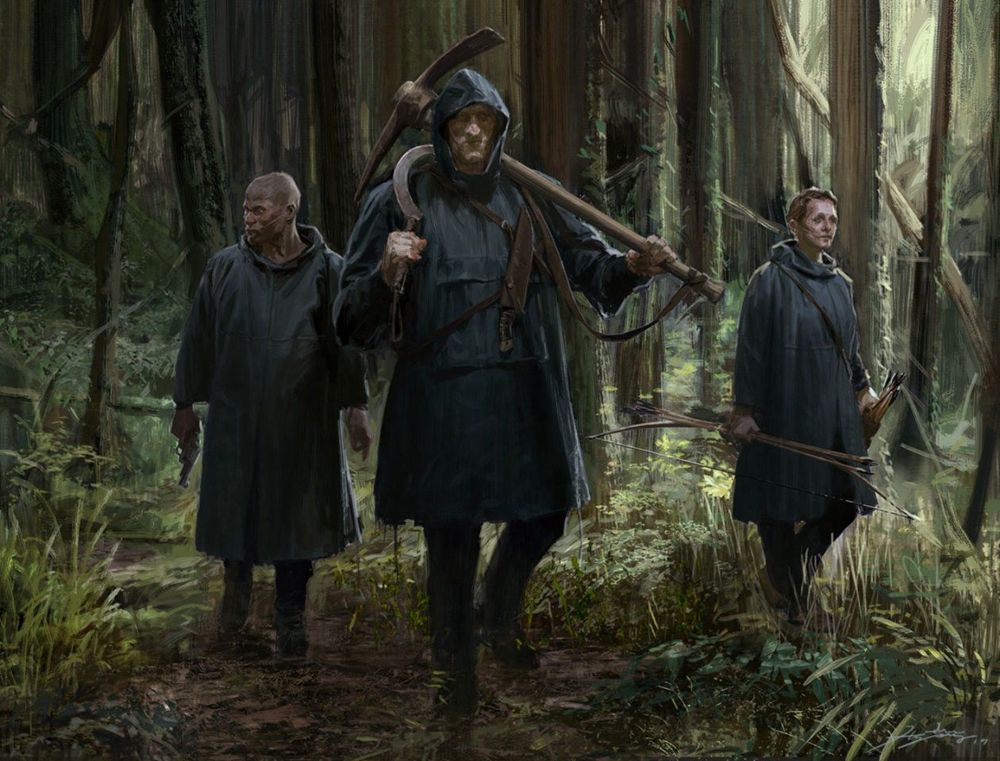
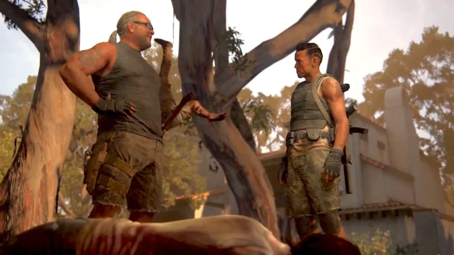

Grupos
ALERTA:Espoiler,contem imagens sobre capitulos do jogo
O grupo de Jackson
Ainda que não seja exatamente uma facção como os outros grupos apresentados ao longo da história do jogo, não tem como deixar de falar do
grupo de Jackson, aquele com os quais estamos habituados e começamos juntos na história do segundo jogo. Eles foram
apresentados pela primeira vez em The Last of Us Parte 1, no capítulo do outono, quando voltamos a interagir com Tommy, o irmão de Joel.
No fim do primeiro jogo é mostrado que Joel e Ellie foram morar em Jackson e, após os 4 anos que se passaram, a protagonista da história
continua morando na cidade liderada por Maria, irmã de Tommy. Agora, também é possível conhecer outros moradores da cidade que se tornam
aliados durante a jornada de vingança, como a namorada de Ellie, Dina e Jesse, ambos com grandes chances de aparecer na segunda temporada da série da HBO.
grupo de Jackson, aquele com os quais estamos habituados e começamos juntos na história do segundo jogo. Eles foram
apresentados pela primeira vez em The Last of Us Parte 1, no capítulo do outono, quando voltamos a interagir com Tommy, o irmão de Joel.
No fim do primeiro jogo é mostrado que Joel e Ellie foram morar em Jackson e, após os 4 anos que se passaram, a protagonista da história
continua morando na cidade liderada por Maria, irmã de Tommy. Agora, também é possível conhecer outros moradores da cidade que se tornam
aliados durante a jornada de vingança, como a namorada de Ellie, Dina e Jesse, ambos com grandes chances de aparecer na segunda temporada da série da HBO.
WLF
Também chamados de Lobos (a pronúncia de lobo em inglês é “wolf” o que torna a palavra muito parecida com a sigla do grupo), a WLF é um dos, se não o
grupo mais presente em The Last of Us 2. A sigla significa “Washington Liberation Front” – ou Fronte de Libertação de Washington, em português. Residentes
na cidade de Seattle, eles são uma milicia extremamente organizada que domina boa parte da cidade e tem como base um estádio de baseball.
Grande parte da presença dos membros da WLF não se deve apenas ao fato de Ellie se aventurar em Seattle e acabar cruzando o caminho da facção,
mas também a principal antagonista de The Last of Us 2, Abby, integrar o grupo. Durante a gameplay com a personagem, que ocupa boa parte do jogo,
temos mais informações e imersão dentro do mundo que dos “lobos”, até mesmo vendo como as coisas funcionam dentro da sua base.

grupo mais presente em The Last of Us 2. A sigla significa “Washington Liberation Front” – ou Fronte de Libertação de Washington, em português. Residentes
na cidade de Seattle, eles são uma milicia extremamente organizada que domina boa parte da cidade e tem como base um estádio de baseball.
Grande parte da presença dos membros da WLF não se deve apenas ao fato de Ellie se aventurar em Seattle e acabar cruzando o caminho da facção,
mas também a principal antagonista de The Last of Us 2, Abby, integrar o grupo. Durante a gameplay com a personagem, que ocupa boa parte do jogo,
temos mais informações e imersão dentro do mundo que dos “lobos”, até mesmo vendo como as coisas funcionam dentro da sua base.
Além da própria Abby, o jogo apresenta e aprofunda a relação com outros personagens presentes na WLF. Esse é um dos elementos que não podem faltar nas
temporadas seguintes de The Last of Us, já que causa impacto direto nas ações de Ellie contra os demais personagens. Entre os principais nomes do grupo que
o jogador tem contato, estão os presentes no grupo que vemos logo no início do jogo, os amigos de Abby.
Alguns dos personagens que fazem parte do grupo são Owen, um antigo caso de Abby que ainda tem uma relação de amizade conturbada com a anti-heroína, além de
sua namorada atual, Mel, que também tem uma participação crucial no desenrolar da trama. Manny, um ex-vagalume que também tem presença constante na história de
Abby é um nome notável do grupo. Todos eles tem uma chance grande de participar da história da segunda temporada da série .
Todos esses membros são liderados por Isaac Dixon. Um dos principais antagonistas da história, mais da trama de Abby do que da própria Ellie, o personagem pode até
mesmo já ter um cast definido para quando aparecer na televisão. No jogo, Isaac é dublado e interpretado através de captura de movimento por Jeffrey Wright, ator
que já participou de Westworld, outra produção da HBO. O personagem tem como um de seus principais objetivos vencer uma guerra que está travando na cidade de Seattle
com outro grupo tão ameaçador quanto o seu: os Serafitas.
temporadas seguintes de The Last of Us, já que causa impacto direto nas ações de Ellie contra os demais personagens. Entre os principais nomes do grupo que
o jogador tem contato, estão os presentes no grupo que vemos logo no início do jogo, os amigos de Abby.
Alguns dos personagens que fazem parte do grupo são Owen, um antigo caso de Abby que ainda tem uma relação de amizade conturbada com a anti-heroína, além de
sua namorada atual, Mel, que também tem uma participação crucial no desenrolar da trama. Manny, um ex-vagalume que também tem presença constante na história de
Abby é um nome notável do grupo. Todos eles tem uma chance grande de participar da história da segunda temporada da série .
Todos esses membros são liderados por Isaac Dixon. Um dos principais antagonistas da história, mais da trama de Abby do que da própria Ellie, o personagem pode até
mesmo já ter um cast definido para quando aparecer na televisão. No jogo, Isaac é dublado e interpretado através de captura de movimento por Jeffrey Wright, ator
que já participou de Westworld, outra produção da HBO. O personagem tem como um de seus principais objetivos vencer uma guerra que está travando na cidade de Seattle
com outro grupo tão ameaçador quanto o seu: os Serafitas.
Serafitas
Os Serafitas são um dos grupos mais marcantes não apenas do segundo jogo, mas de toda a franquia The Last of Us. Apresentados como fanáticos religiosos, diferentes da WLF,
eles aparentem rejeitar qualquer tecnologia moderna. Seguidores de uma líder que já faleceu e que eles pensam ser uma profetiza, sua doutrina diz que o mundo anterior ao
dominado pelo fungo acabou por conta da submissão ao pecado. ~
Em guerra constante com a WLF, eles também habitam a área de Seattle. Por toda a cidade, é possível ver pinturas referentes a eles e sua Profetiza, com escritos como “sinta o amor”
pelas paredes e imagens da mulher adorada pelos cultistas. Além do uso de arco e flechas em detrimento das armas de fogo, os Serafitas também têm como uma de suas marcas registradas
ter a região da boca cortada, provavelmente como parte de um ritual religiosos. Essa característica rendeu a eles o apelido de “cicatrizes” por parte dos Lobos.
Por mais que o grupo tenha participação na história de Ellie, entrando em seu caminho e de Dina durante a gameplay, a narrativa de Abby se encontra muito mais com a seita, inclusive
tendo contato direto com dois membros que fazem toda diferença para sua história: Lev e Yara. Ambos os personagens foram participantes do grupo, mas estão divididos sobre seu verdadeiro
propósito, algo que se conecta com a própria história de Abby durante o jogo.
Por mais que os Serafitas sejam um dos grupos mais importantes de The Last of Us 2 e muitos fãs estejam ansiosos para vê-los em tela, é difícil apontar a presença do grupo na segunda
temporada da série como certa. Como eles tem mais participação na história da Abby e demoram um pouco para aparecer na trama da Ellie, talvez a participação do grupo acabe sendo adiada
para uma futura terceira temporada da série. Mas no final das contas, como nada está confirmado para o futuro, tudo pode acontecer.

eles aparentem rejeitar qualquer tecnologia moderna. Seguidores de uma líder que já faleceu e que eles pensam ser uma profetiza, sua doutrina diz que o mundo anterior ao
dominado pelo fungo acabou por conta da submissão ao pecado. ~
Em guerra constante com a WLF, eles também habitam a área de Seattle. Por toda a cidade, é possível ver pinturas referentes a eles e sua Profetiza, com escritos como “sinta o amor”
pelas paredes e imagens da mulher adorada pelos cultistas. Além do uso de arco e flechas em detrimento das armas de fogo, os Serafitas também têm como uma de suas marcas registradas
ter a região da boca cortada, provavelmente como parte de um ritual religiosos. Essa característica rendeu a eles o apelido de “cicatrizes” por parte dos Lobos.
Por mais que o grupo tenha participação na história de Ellie, entrando em seu caminho e de Dina durante a gameplay, a narrativa de Abby se encontra muito mais com a seita, inclusive
tendo contato direto com dois membros que fazem toda diferença para sua história: Lev e Yara. Ambos os personagens foram participantes do grupo, mas estão divididos sobre seu verdadeiro
propósito, algo que se conecta com a própria história de Abby durante o jogo.
Por mais que os Serafitas sejam um dos grupos mais importantes de The Last of Us 2 e muitos fãs estejam ansiosos para vê-los em tela, é difícil apontar a presença do grupo na segunda
temporada da série como certa. Como eles tem mais participação na história da Abby e demoram um pouco para aparecer na trama da Ellie, talvez a participação do grupo acabe sendo adiada
para uma futura terceira temporada da série. Mas no final das contas, como nada está confirmado para o futuro, tudo pode acontecer.
Cascavéis
Os Cascavéis provavelmente são o grupo mais cruel de The Last of Us Parte 2. Eles são os últimos inimigos da história do jogo, só aparecendo no terço final, após todos os
acontecimentos de Seattle. Sua localização principal é a cidade de Santa Barbara, na costa oeste dos Estados Unidos, local onde o jogo termina as histórias tanto de Ellie quanto de Abby.
Uma das principais marcas dessa facção é o uso de escravos humanos. Os membros dessa milicia sequestram sobreviventes que passam pela zona litorânea e os força a trabalhar
para eles. Sua base, uma espécie de pousada, é onde esses mesmos cativos também ficam aprisionados. Aqueles que tentam fugir sofrem as mais diversas punições, como serem mordidos
por infectados e a mais assustadora mostrada no jogo, serem deixados para morrer sofrendo amarrados a um píer na praia.
Como tem uma participação pequena no jogo, não há nenhum membro realmente notável da facção, ou pelo menos algum que alguma das protagonistas tenha interagido o suficiente para sabermos
mais sobre. Além disso, é difícil que a segunda temproada de The Last of Us adapte todo o jogo, dessa forma, os Cascavéis só devem aparecer em uma terceira ou até mesmo quarta temporada
da série. É necessário lembrar também que não se pode descartar uma participação dos personagens em uma possível continuação da história no mundo dos games.

clubedovideogame
acontecimentos de Seattle. Sua localização principal é a cidade de Santa Barbara, na costa oeste dos Estados Unidos, local onde o jogo termina as histórias tanto de Ellie quanto de Abby.
Uma das principais marcas dessa facção é o uso de escravos humanos. Os membros dessa milicia sequestram sobreviventes que passam pela zona litorânea e os força a trabalhar
para eles. Sua base, uma espécie de pousada, é onde esses mesmos cativos também ficam aprisionados. Aqueles que tentam fugir sofrem as mais diversas punições, como serem mordidos
por infectados e a mais assustadora mostrada no jogo, serem deixados para morrer sofrendo amarrados a um píer na praia.
Como tem uma participação pequena no jogo, não há nenhum membro realmente notável da facção, ou pelo menos algum que alguma das protagonistas tenha interagido o suficiente para sabermos
mais sobre. Além disso, é difícil que a segunda temproada de The Last of Us adapte todo o jogo, dessa forma, os Cascavéis só devem aparecer em uma terceira ou até mesmo quarta temporada
da série. É necessário lembrar também que não se pode descartar uma participação dos personagens em uma possível continuação da história no mundo dos games.